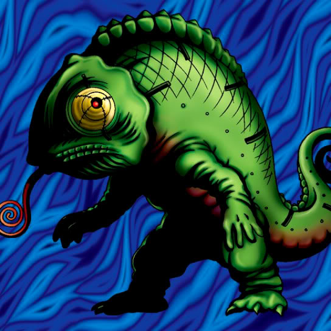

Mechaleon

Description: "Flips all your spell cards face-down when this card is flipped face-up."
STATS
ATK: 800
DEF: 600DECK COST
Deck Cost per Card: 19EFFECT NOT IMPLEMENTED
Fusion List (5 Possible Fusions)
- Mechaleon + Clown Zombie = Soul Hunter
- Mechaleon + Griggle = Snakeyashi
- Mechaleon + Living Vase = Snakeyashi
- Mechaleon + Man-Eater Bug = Snakeyashi
- Mechaleon + Tentacle Plant = Snakeyashi